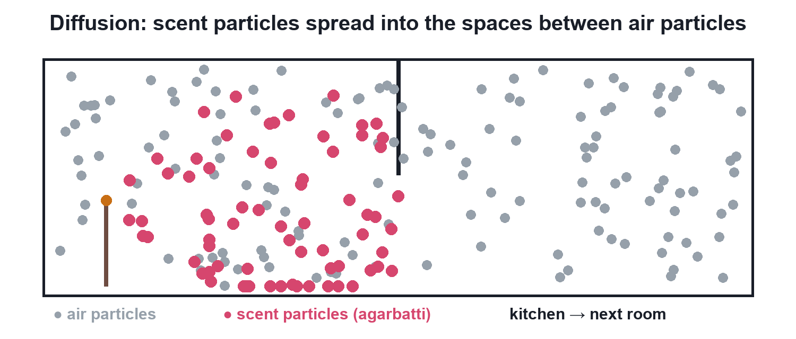
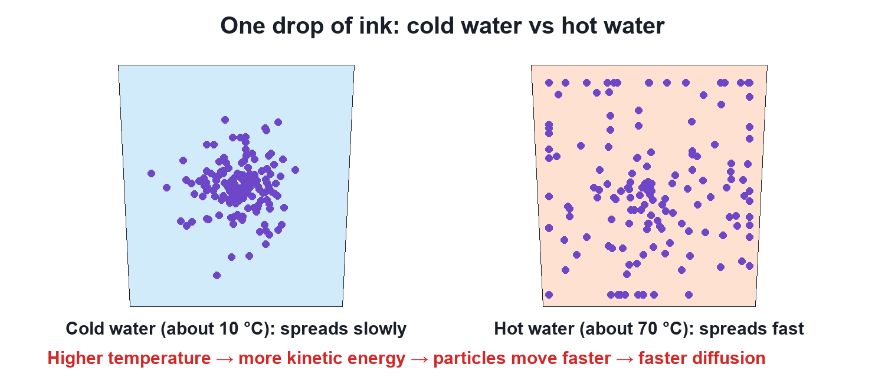

Chapter 1 · Chemistry
Particles of Matter Are Continuously Moving
Video not playing? Watch on Instagram · YouTube
An agarbatti's smell reaches the next room without a fan. The particles of matter never stop moving, and they move faster when it is hotter.
Download the short notesPDF, 161 KB · solved examples, practice set and answer key That's all the videos in this chapter so far Back to Matter in Our Surroundings
Key points
- Particles of matter are continuously moving: they have kinetic energy.
- Their intermixing on their own is diffusion.
- Temperature ↑ → kinetic energy ↑ → particles move faster → diffusion faster.
- Diffusion is fastest in gases, slower in liquids, slowest in solids.
The agarbatti puzzle
The scent particles of a burning agarbatti move on their own into the spaces between air particles and spread to the next room. This intermixing is diffusion.

Cold water vs hot water

Temperature ↑ → kinetic energy ↑ → speed of particles ↑ → diffusion faster
Daily-life examples
- Hot food is smelt from far away; cold food only up close.
- Perfume sprayed in one corner fills the room.
- A crystal of potassium permanganate colours still water by itself.
Try it yourself
Goal: See how temperature changes the speed of particles and how fast an ink drop spreads.
- Set the water temperature with the slider.
- Press Drop ink and watch the particles spread.
- Note the spread after a few seconds.
- Reset, change the temperature and compare.
Quick quiz
4 questions. Choose an answer for each, then submit to see your score and the explanations.
More from Matter in Our Surroundings
 Particles of MatterMatter looks continuous, but it is made of extremely small particles. Two crystals of potassium permanganate can colour glass after glass of water.Chemistry
Particles of MatterMatter looks continuous, but it is made of extremely small particles. Two crystals of potassium permanganate can colour glass after glass of water.Chemistry Particles Have Spaces Between Them50 mL of water plus 50 mL of alcohol gives only about 96 mL. The reason: particles of matter have spaces between them.Chemistry
Particles Have Spaces Between Them50 mL of water plus 50 mL of alcohol gives only about 96 mL. The reason: particles of matter have spaces between them.Chemistry What is Matter?Anything that has mass and takes up space is matter, even the air you cannot see.Chemistry
What is Matter?Anything that has mass and takes up space is matter, even the air you cannot see.Chemistry